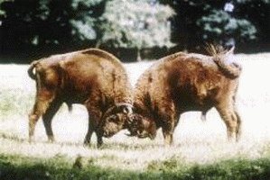

 Farmer John owns b bulls and c cows. He also owns b+c fields where each field can hold either one cow or one bull. The fields are located in an area with many hills, so for some pairs of fields the animals in those fields cannot see each other. Unfortunately, his bulls really do not like each other, and neither do his cows. To avoid making any animal angry, John would like to assign the animals to fields such that no two bulls can see each other and no two cows can see each other. Help determine if John can assign his bulls and cows in such a manner.
Input: The first line of input contains n, the number of examples. The first line of each example contains integers b, c, and a where 0 ≤ b,c ≤ 1000 are, respectively, the number of bulls and cows and 0 ≤ a ≤ 20,000. The next a lines of input each contains two numbers u and v which indicates that animals placed in fields u and v can see each other. Fields are numbered from 1 to b+c.
Output: For each example, output a single line containing yes if peace can be ensured, and no if it can not.
2 2 2 4 1 2 2 3 3 4 4 1 3 1 2 1 2 3 4
yes no